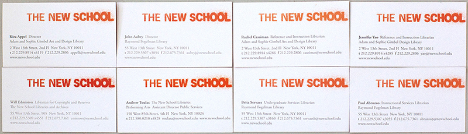
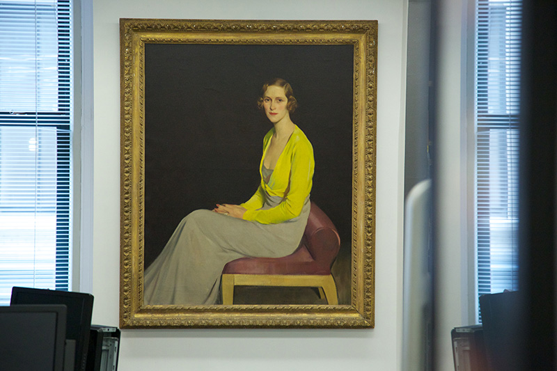
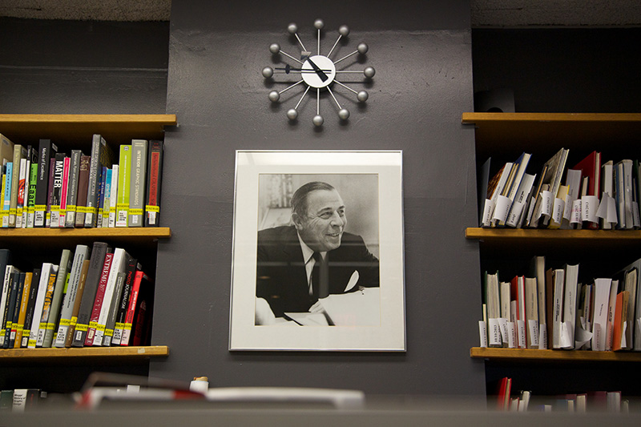

The circulation desk
employs
eight staff1

to help people navigate the
stacks
and check out materials. An orange staircase beside the desk provides access to the
quiet study space. There are two images hanging behind the desk: a painting of
Sophie Gimbel2

and a photograph of
Adam Gimbel.3

There is another
study area
beside the circulation desk.
1
Kira Appel, John Aubry, Rachel Cassiman, Jennifer Yao, Will Edmiston, Andrew Toulas, Brita Servaes, Paul Abduzzo.
2
While the library was originally the Adam Gimbel Design Library, its name was changed to the Adam and Sophie Gimbel Design Library after her death in 1981.
3
Founder of Gimbels, an American department store which was featured in Miracle on 34th Street.